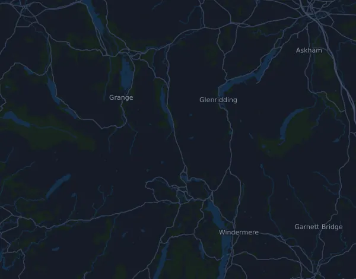

Montane Lakeland 100 164,4 km
- Distans
- 164,4 km
- Höjdmeter
- ↑ 6 071 m
- Högsta punkt
- 666 m ö.h.
- Underlag
- Terräng och stig
- Karaktär
- Mycket kuperad
Höjdprofil
Förbered dig med Mila
Mila är en löpcoach i appen. Lägger du till ett lopp i din plan planerar coachen veckorna fram till start efter din form, och ger dig en tidsprognos och en plan för tempo, vätska och energi på banan.

Rätt pass. Rätt dag.
Banan

Om banan
Montane Lakeland 100 startar och slutar i Coniston och är 164 km med 6 071 höjdmeter upp och lika mycket ned, mellan 44 och 666 m ö.h. och med 30 klättringar över 25 m. Den första stora stigningen kommer redan vid km 3,5, med 365 m på 3,6 km. Kring km 29 och km 39 följer två långa klättringar på 469 och 511 m. De tuffaste partierna ligger ändå sent: 511 m på 4,5 km (drygt 11 %) från km 104 och sedan 340 m på bara 1,9 km, över 18 %, vid km 119. Efter höjderna runt km 115 går banan mest nedåt, och de sista 15 km ligger lågt och troligen relativt flackt.
Banan kräver uthållighet över ett dygn eller mer, stark gång i branta backar och lår som tål tusentals höjdmeter nedför. Bygg långpassen stegvis i kuperad terräng, gärna två långa pass i rad. Träna rask backgång där pulsen styr, och nedförslöpning. Styrka för lår och vader skyddar mot de sena nedförsbackarna. Öva också på att äta och dricka under långa pass och att springa i mörker.
Beskrivningen är skriven av Milas coach utifrån banans data.
Klättringar
| Börjar vid | Längd | Höjdmeter | Lutning | Topp (m ö.h.) |
|---|---|---|---|---|
| km 0,0 | 2,4 km | 253 m | 10,4 % | 305 |
| km 3,5 | 3,6 km | 365 m | 10,1 % | 592 |
| km 10,9 | 2,1 km | 144 m | 7,0 % | 251 |
| km 13,8 | 2,1 km | 134 m | 6,3 % | 362 |
| km 20,6 | 4 km | 231 m | 5,8 % | 284 |
| km 25,1 | 1,4 km | 38 m | 2,7 % | 298 |
| km 28,7 | 4,9 km | 469 m | 9,5 % | 536 |
| km 35,5 | 1 km | 170 m | 17,0 % | 452 |
| km 38,9 | 7,6 km | 511 m | 6,7 % | 617 |
| km 51,7 | 8,6 km | 335 m | 3,9 % | 417 |
| km 62,5 | 600 m | 27 m | 4,5 % | 356 |
| km 66,1 | 6,2 km | 306 m | 4,9 % | 438 |
| km 73,2 | 2,4 km | 38 m | 1,6 % | 435 |
| km 80,4 | 2,1 km | 174 m | 8,2 % | 367 |
| km 92,9 | 1,2 km | 26 m | 2,1 % | 170 |
| km 94,6 | 5 km | 179 m | 3,6 % | 328 |
| km 104,4 | 4,5 km | 511 m | 11,4 % | 666 |
| km 112,8 | 770 m | 36 m | 4,7 % | 301 |
| km 114,6 | 1,5 km | 36 m | 2,4 % | 299 |
| km 117,2 | 560 m | 26 m | 4,8 % | 276 |
| km 118,9 | 1,9 km | 340 m | 18,4 % | 591 |
| km 124,1 | 2 km | 142 m | 6,9 % | 350 |
| km 128,7 | 2,5 km | 274 m | 10,9 % | 449 |
| km 134,8 | 2 km | 120 m | 5,9 % | 242 |
| km 140,4 | 2,1 km | 142 m | 6,9 % | 193 |
| km 144,6 | 6,2 km | 84 m | 1,4 % | 131 |
| km 151,0 | 1,7 km | 135 m | 7,9 % | 226 |
| km 154,5 | 310 m | 29 m | 9,6 % | 184 |
| km 155,7 | 1,8 km | 95 m | 5,2 % | 211 |
| km 158,9 | 2,4 km | 240 m | 9,9 % | 399 |
Vanliga frågor
När går Montane Lakeland 100 164,4 km?
Montane Lakeland 100 164,4 km går fredag 23 juli 2027. Kontrollera datum och starttid hos arrangören.
Hur lång är Montane Lakeland 100 164,4 km och hur många höjdmeter är det?
Loppet är 164,4 km långt med 6 071 höjdmeter uppför och 6 070 nedför. Högsta punkten ligger 666 m ö.h.
Hur ser banan på Montane Lakeland 100 164,4 km ut?
Banan räknas som mycket kuperad, med 37 höjdmeter per km i snitt. Den har 30 klättringar på minst 25 höjdmeter; den största börjar vid km 38,9: 511 höjdmeter på 7,6 km. Start och mål ligger på samma plats. Underlaget är terräng och stig.
Hur lägger jag upp farten på Montane Lakeland 100 164,4 km?
Sikta på en jämn ansträngning snarare än ett jämnt tempo: låt farten gå ner i uppförsbackarna, hämta tillbaka den när det planar ut, och håll igen de första kilometrarna. De största klättringarna börjar vid km 3,5, km 28,7, km 38,9 och km 104,4. I Mila får du en tempoplan för just den här banan efter din egen form.
Fler lopp som det här
Fler lopp i närheten
- West Highland Way Race 153 km19 juni 2027 · Milngavie, Storbritannien
- AJ Bell Great North Run 21 km12 september 2027 · Newcastle upon Tyne, Storbritannien
- AJ Bell Great Manchester Run 10K23 maj 2027 · Manchester, Storbritannien
- AJ Bell Great Scottish Run – Half Marathon 21 km3 oktober 2027 · Glasgow, Storbritannien
- MBNA Chester Marathon 42,2 km10 oktober 2027 · Chester, Storbritannien
- Oysho Royal Parks Half Marathon 21 km10 oktober 2027 · London, Storbritannien
Förbered dig med Mila
Rätt pass. Rätt dag.
Uppgifterna kommer ur banfilen och arrangörens information. Kontrollera datum, starttider och regler hos arrangören.
Mila är inte kopplad till, sponsrad av eller godkänd av arrangören eller loppets sponsorer. Namn och varumärken tillhör sina ägare. Arrangör eller rättighetsinnehavare? Begär ändring eller borttagning